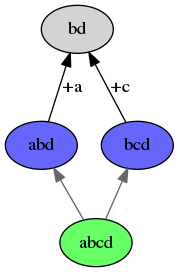

Partial visibility¶
Member-sets¶
- diff and apply
Operations on the causal order¶
Define “cut” in the graph, generalisation of “before” and “after”.
Expand definition of “acked-by”.
Expand algorithms for FIN/ACK.
Subjective vs objective views¶
- Rejoin semantics
Merge algorithm¶
Under partial visibility, our merge algorithm from the previous section does not work consistently:
In the following example, b has full visibility of the history, and can execute the merge as normal:
![digraph merge_full_visibility {
rankdir=BT;
node [style="filled"];
O [label="b"];
A [label="abc"];
A1 [label="ab"];
A2 [label="bc"];
B [label="bd"];
C [label="abd",fillcolor="#6666ff"];
D [label="bcd",fillcolor="#6666ff"];
X [label="bd",fillcolor="#66ff66"];
A -> O [label="+ac"];
B -> O [label="+d"];
A1 -> A [label="-c"];
A2 -> A [label="-a"];
C -> B [color="#666666"];
D -> B [color="#666666"];
C -> A1 [color="#666666"];
D -> A2 [color="#666666"];
X -> C [color="#666666"];
X -> D [color="#666666"];
}](../_images/graphviz-e4d63245621dddbd120cc824bf9424badc6fc89f.png)
But when d executes the merge, he has an incomplete view of history:
